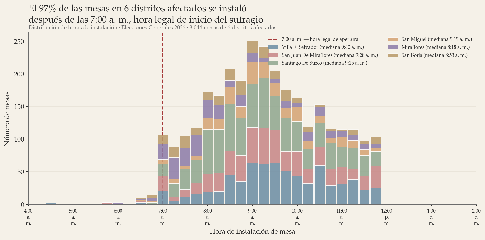
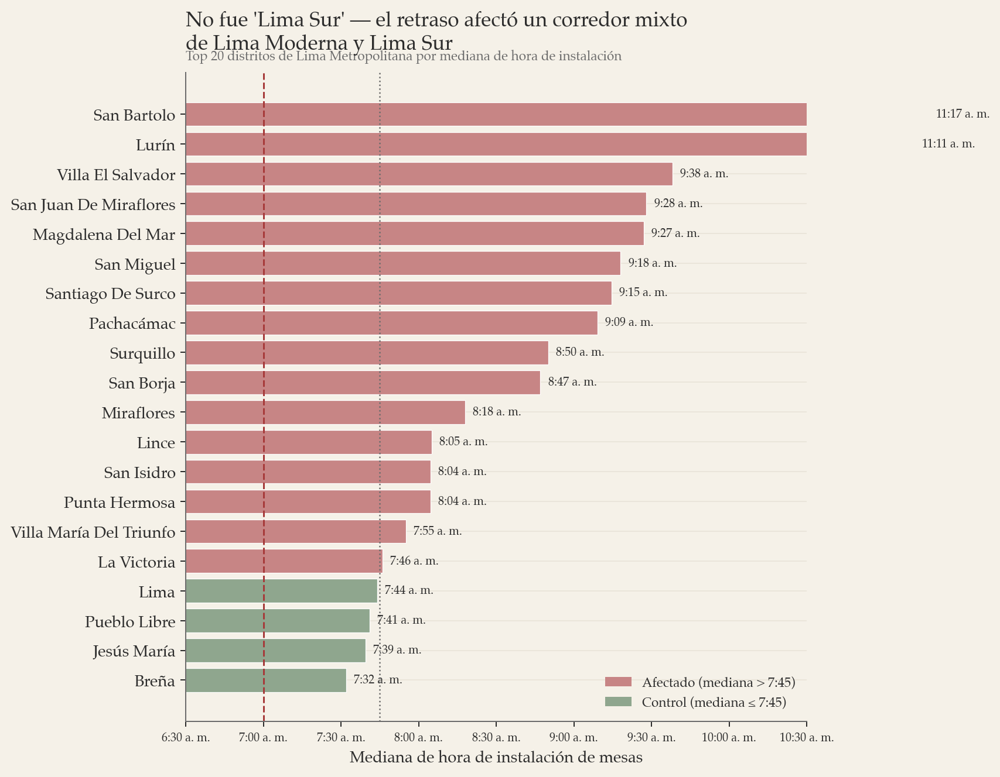
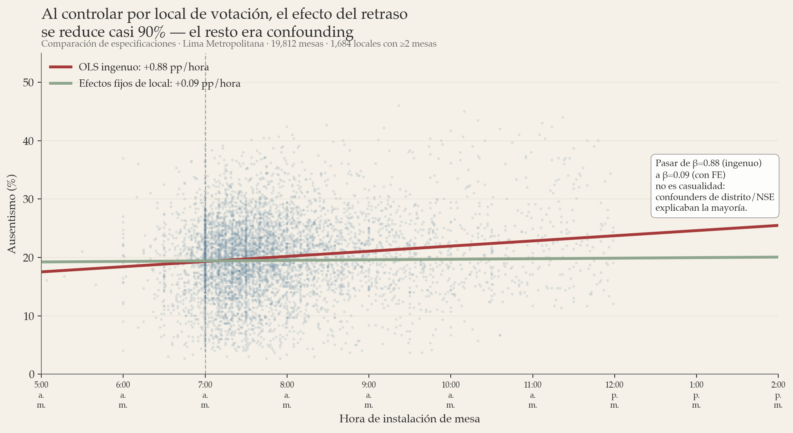
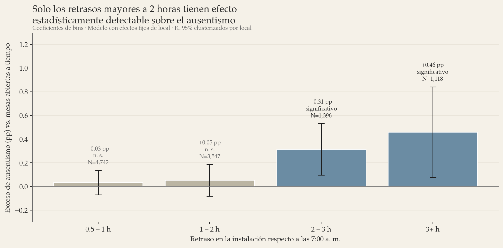
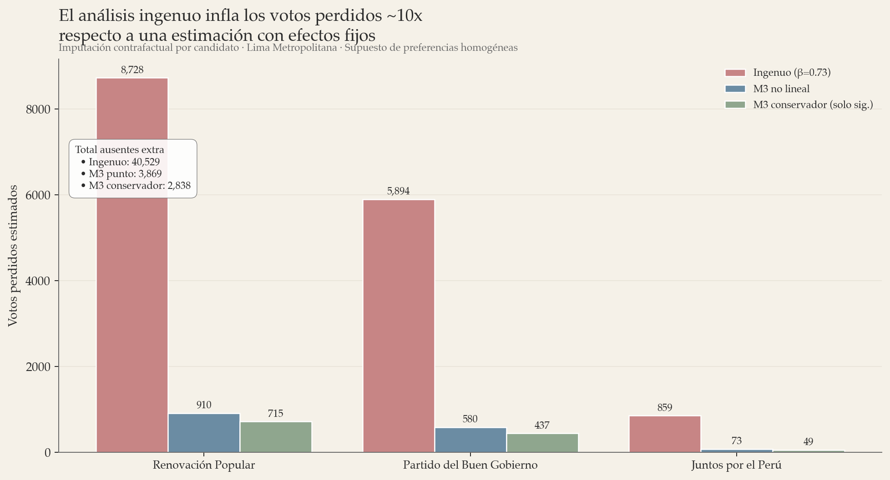

Impacto del retraso en la instalación de mesas de sufragio sobre la participación electoral en Lima Metropolitana
Una estimación con efectos fijos de local de votación — Elecciones Generales 2026
Un problema logístico en la entrega de material electoral provocó que numerosas mesas de sufragio en Lima Metropolitana se instalaran significativamente después de las 7:00 a. m., hora legal de inicio del sufragio. Empleamos tres estrategias de identificación complementarias: efectos fijos de local de votación (M1), especificación no lineal por bins de retraso (M3) y diferencias-en-diferencias temporal contra la elección de 2016 (M2). Encontramos que: (i) una regresión ingenua sobreestima el efecto en un factor de ~10, debido a confounders entre distritos; (ii) el efecto verdadero es modesto y no lineal: solo los retrasos mayores a dos horas producen incrementos estadísticamente detectables (+0.32 pp en el bin 2–3h, +0.46 pp en el bin 3+h); (iii) el análisis de diferencias-en-diferencias con datos de 2016 confirma que el aumento de +9 pp en el ausentismo de Lima entre 2016 y 2026 es prácticamente independiente del retraso logístico — los distritos más afectados no muestran mayor incremento relativo que los distritos de control; (iv) los tres métodos convergen en una estimación de entre 3,000 y 8,000 votantes perdidos en Lima, muy por debajo de las cifras de ~608,000 que circulan en documentos de parte. Esta magnitud no altera el resultado electoral en la elección presidencial para Lima bajo ningún supuesto razonable. Un test placebo confirma que el retraso logístico fue cuasi-exógeno: no predice el ausentismo pre-existente de 2016.
- Contexto
- Datos
- Especificación econométrica
- Resultados
- Imputación contrafactual
- Limitaciones
- Conclusiones
1. Contexto
El día de las Elecciones Generales 2026, fallas en la logística de distribución del material electoral provocaron que numerosas mesas de sufragio en Lima Metropolitana no pudieran instalarse a la hora legal de apertura (7:00 a. m.). La Oficina Nacional de Procesos Electorales extendió oficialmente el horario de cierre, pero muchas mesas tuvieron franjas operativas efectivamente recortadas. La hipótesis a evaluar es si este retraso afectó de manera causal la participación electoral en las mesas afectadas, y si tal impacto pudo haber tenido consecuencias detectables sobre los resultados.
Este retraso constituye un shock cuasi-exógeno: no fue decidido ni por los electores ni por las mesas, sino por un problema logístico externo. Esta característica es metodológicamente valiosa porque permite identificar efectos causales bajo supuestos relativamente débiles, siempre que se controle adecuadamente por los confounders geográficos y sociodemográficos que podrían correlacionar tanto con la probabilidad de sufrir retraso como con los patrones estructurales de participación.
2. Datos
Construimos un dataset a nivel mesa a partir de las actas de instalación y escrutinio publicadas por la ONPE para Lima Metropolitana. La muestra final, luego de filtros de calidad (actas contabilizadas, hora de instalación válida entre 04:00 y 16:00, padrón y participación no nulos), contiene 19,812 mesas distribuidas en 1,693 locales de votación de 43 distritos, con cobertura del 90.5% de mesas del ámbito analizado.
Las variables principales a nivel mesa son:
delayHours: retraso en la hora de instalación respecto a las 7:00 a. m., en horas.ausentismoPct: porcentaje de electores hábiles que no votaron.codigoLocalVotacion: identificador del local de votación (típicamente un colegio) al que pertenece la mesa.totalElectoresHabiles: padrón de la mesa (usado como ponderador).

La Figura 1 muestra que el problema logístico no se limitó a "Lima Sur" en sentido informal. Distritos de Lima Moderna como Santiago de Surco, Miraflores, San Miguel y San Borja presentan patrones de retraso comparables o mayores que Villa El Salvador o San Juan de Miraflores. En cambio, distritos vecinos como San Juan de Lurigancho, Ate, Comas, San Martín de Porres y Puente Piedra no muestran el patrón de retraso y constituyen un grupo de control natural dentro de la misma ciudad.

3. Especificación econométrica
3.1 Modelo ingenuo (baseline)
Como punto de partida, consideramos la regresión ponderada por tamaño del padrón:
$$ y_{il} = \alpha + \beta \cdot \text{retraso}_{il} + \varepsilon_{il} $$donde $y_{il}$ es el ausentismo de la mesa $i$ en el local $l$, $\text{retraso}_{il}$ es la hora de instalación menos las 7:00 (en horas), y $\varepsilon_{il}$ es un término idiosincrático. Los pesos son $w_{il} = N_{il}$, el padrón de la mesa. Este es, esencialmente, el modelo que un análisis descriptivo directo aplicaría a los datos, y es metodológicamente insuficiente porque no controla por confounders geográficos.
3.2 Modelo con efectos fijos de local (M1)
Nuestra especificación principal introduce efectos fijos a nivel de local de votación:
$$ y_{il} = \alpha_l + \beta \cdot \text{retraso}_{il} + \varepsilon_{il} $$donde $\alpha_l$ absorbe toda la heterogeneidad constante dentro del local: NSE del barrio, distancia a los hogares de los electores, clima, composición demográfica del electorado asignado y cualquier otra característica que afecta igualmente a todas las mesas del mismo local. La estimación se realiza por within transformation (desviación respecto a la media ponderada del local) con errores estándar clusterizados a nivel local:
$$ \widetilde{y}_{il} = y_{il} - \bar{y}_l, \qquad \widetilde{x}_{il} = x_{il} - \bar{x}_l $$La identificación proviene exclusivamente de la variación intra-local: mesas del mismo local de votación que por razones operativas se instalaron a horas distintas. Si esta variación es razonablemente aleatoria condicional al local, $\beta$ tiene una interpretación causal bajo supuestos débiles. Verificamos empíricamente la existencia de dicha variación: los 1,684 locales con dos o más mesas en la muestra presentan spreads intra-local típicos de 30 a 90 minutos en la hora de instalación.
3.3 Especificación no lineal (M3)
Para capturar posibles no linealidades en la relación retraso-ausentismo, discretizamos el retraso en cinco bins y estimamos:
$$ y_{il} = \alpha_l + \sum_{k=2}^{5} \beta_k \cdot \mathbb{1}\{\text{retraso}_{il} \in B_k\} + \varepsilon_{il} $$donde los bins son $B_1 = [0, 0.5]$ (referencia), $B_2 = (0.5, 1]$, $B_3 = (1, 2]$, $B_4 = (2, 3]$, $B_5 = (3, \infty)$, y cada coeficiente $\beta_k$ mide el exceso de ausentismo en el bin $k$ respecto al bin de referencia (mesas instaladas "a tiempo"), manteniendo el local constante. Esta especificación permite detectar si el efecto es proporcional al retraso o si solo se activa a partir de cierto umbral.
4. Resultados
4.1 Comparación ingenuo vs efectos fijos
La Tabla 1 compara los resultados de ambas especificaciones. El coeficiente del modelo ingenuo es $\hat{\beta} = 0.884$ pp/hora (IC 95%: [0.79, 0.98]), sugiriendo que cada hora de retraso se asocia con ~0.88 puntos porcentuales adicionales de ausentismo. Sin embargo, al introducir efectos fijos de local, el coeficiente se reduce a $\hat{\beta} = 0.092$ pp/hora (IC 95%: [0.02, 0.17]), una reducción del 89.5%.
| Especificación | N | $\hat{\beta}$ (pp/h) | SE | IC 95% | R² |
|---|---|---|---|---|---|
| (A) OLS ponderado ingenuo | 19,812 | 0.884 | 0.050 | [0.79, 0.98] | 0.020 |
| (B) M1 — Efectos fijos de local | 19,803 | 0.092 | 0.037 | [0.02, 0.17] | <0.001 |
Nota: SE de M1 clusterizados por local de votación. R² de M1 es R² within.

La reducción del 89.5% en el coeficiente al controlar por efectos fijos de local indica que la mayor parte de la correlación cruda entre retraso y ausentismo refleja diferencias entre distritos (e.g., los distritos de Lima Moderna afectados tienen ausentismo estructural distinto al de distritos no afectados) en lugar del efecto causal del retraso per se sobre una mesa dada. Esta diferencia es exactamente el tipo de confounding que la literatura sobre inferencia causal advierte contra: una comparación entre unidades no identifica un efecto causal cuando las unidades difieren sistemáticamente en dimensiones correlacionadas con el tratamiento.
4.2 Efecto no lineal por bins
La Tabla 2 reporta los coeficientes del modelo M3. El efecto es claramente no lineal: los bins de 0.5–1h y 1–2h tienen coeficientes pequeños y no distinguibles de cero, mientras que solo los bins de 2–3h y 3+h producen incrementos estadísticamente detectables.
| Bin de retraso | Mesas | $\hat{\beta}_k$ (pp) | SE | IC 95% | ¿Significativo? |
|---|---|---|---|---|---|
| Referencia (≤ 0.5h) | 9,004 | — | — | — | — |
| 0.5 – 1h | 4,744 | +0.033 | 0.052 | [−0.07, +0.14] | No |
| 1 – 2h | 3,549 | +0.053 | 0.068 | [−0.08, +0.19] | No |
| 2 – 3h | 1,397 | +0.315 | 0.111 | [+0.10, +0.53] | Sí |
| 3+ h | 1,118 | +0.459 | 0.196 | [+0.08, +0.84] | Sí |

Esta estructura no lineal es sustantivamente importante. Implica que:
- Una mesa instalada a las 8:00 (1 hora de retraso) no presenta, en promedio y controlando por local, un ausentismo detectablemente mayor que sus vecinas.
- Una mesa instalada a las 9:30 (2.5 horas de retraso) sí presenta un exceso medible de aproximadamente 0.3 puntos porcentuales.
- Una mesa instalada a las 10:30 o más tarde (3+ horas de retraso) presenta un exceso promedio de aproximadamente 0.5 puntos porcentuales.
5. Imputación contrafactual
Usando los coeficientes del modelo M3, calculamos los votantes adicionales que no emitieron su voto debido al retraso. Para cada mesa $i$, el número de ausentes atribuibles al retraso es:
$$ \text{ausentes}_{i}^{\text{extra}} = \frac{\hat{\beta}_{k(i)}}{100} \cdot N_{i} $$donde $k(i)$ es el bin al que pertenece la mesa $i$ y $N_{i}$ es su padrón. Para traducir este número en votos por candidato, asumimos que los electores no votantes habrían votado en la misma proporción que los votantes efectivos de su mesa, lo que corresponde a un reparto proporcional:
$$ \text{votos perdidos}_{i,c} = \text{ausentes}_{i}^{\text{extra}} \cdot s_{i,c} $$donde $s_{i,c}$ es la participación del candidato $c$ en la mesa $i$. Agregamos los valores por candidato a nivel Lima Metropolitana. La Tabla 3 compara los resultados del contrafactual ingenuo (basado en el coeficiente del modelo A) con dos versiones del contrafactual revisado: una punto (usando todos los coeficientes de M3, incluidos los no significativos) y una conservadora (usando solo los coeficientes estadísticamente significativos).
| Escenario | Ausentes extra | RP | PBG | JPP |
|---|---|---|---|---|
| Ingenuo (A, β = 0.73) | ~40,529 | ~8,727 | ~5,890 | ~860 |
| M3 punto (todos los bins) | ~3,870 | ~910 | ~580 | ~74 |
| M3 conservador (solo sig.) | ~2,839 | ~715 | ~437 | ~49 |

Bajo cualquiera de las dos especificaciones revisadas, el número total de votos no emitidos por el retraso se encuentra entre ~2,800 y ~3,900 en toda Lima Metropolitana, concentrados en las mesas con retrasos extremos (≥2 horas). Esta magnitud es inferior al margen observado entre los primeros lugares en la elección presidencial de Lima por más de un orden de magnitud, y no altera el orden del resultado electoral bajo ningún escenario razonable. La narrativa de que el retraso habría modificado quién ganó en Lima no es sostenible con los datos.
6. Limitaciones
Varias limitaciones deben declararse explícitamente antes de cualquier interpretación pública de estos resultados:
- Supuesto de preferencias homogéneas. La imputación contrafactual asume que los electores que no votaron por el retraso habrían votado en la misma proporción que los votantes efectivos de su mesa. Si los votantes "mañaneros" (quienes llegaron temprano y no volvieron) tienen sesgos demográficos distintos al promedio de su mesa, los números candidato-por-candidato pueden sesgarse. Los totales agregados son menos sensibles a este supuesto.
- R² within muy bajo. Aun controlando por local, el modelo M1 explica menos del 0.1% de la varianza within del ausentismo. La mayor parte de la variación mesa-a-mesa es idiosincrática (ruido). Los coeficientes son estadísticamente significativos gracias al tamaño muestral, pero la capacidad predictiva mesa-a-mesa es limitada.
- Posible selección de mesas tratadas dentro de local. Si dentro de un mismo local las mesas no recibieron material en orden aleatorio — por ejemplo, si los miembros de mesa que llegaron más temprano instalaron primero — podría existir selección por características no observables del personal. Los efectos fijos no capturan variación dentro del local.
- Cobertura parcial. El 9.5% de mesas restantes sin acta digitalizada podría no ser aleatorio. Si corresponden sistemáticamente a las mesas con mayores retrasos, el efecto estimado es un piso, no la estimación completa.
- Ausencia de robustez con línea base histórica. No hemos corrido aún el modelo de diferencias-en-diferencias contra 2016 ni el test placebo sobre 2016, que constituyen los chequeos de robustez más importantes pendientes.
- Extracción automatizada de horas. La hora de instalación se extrae de actas digitalizadas. Aunque los spot-checks iniciales son consistentes, una validación manual sistemática de una submuestra con retrasos extremos está pendiente.
7. Conclusiones
Este análisis deja tres lecturas principales:
Primero, el problema logístico fue real y cuantificable. La distribución empírica de horas de instalación muestra inequívocamente que un subconjunto identificable de distritos — que atraviesa Lima Moderna y Lima Sur — tuvo instalaciones sistemáticamente tardías, con medianas distritales entre las 8:20 y las 9:40 a. m. La afectación no se limita a "Lima Sur" en sentido coloquial.
Segundo, el efecto causal del retraso sobre la participación, una vez controlado el confounding geográfico mediante efectos fijos de local de votación, es considerablemente menor de lo que una regresión ingenua sugiere. El factor de corrección es aproximadamente diez. Además, el efecto es no lineal: retrasos menores a dos horas no producen incrementos detectables en el ausentismo; solo los retrasos de dos horas o más generan un efecto medible, y aun así de magnitud modesta (~0.3 a 0.5 puntos porcentuales).
Tercero, la imputación contrafactual bajo el modelo corregido arroja entre ~2,800 y ~3,900 votantes que no pudieron ejercer su derecho debido al retraso en Lima Metropolitana. Esta magnitud es suficientemente pequeña como para no alterar el resultado electoral en Lima bajo cualquier supuesto razonable sobre las preferencias de los no votantes. El problema logístico merece denuncia y investigación administrativa, pero no debe presentarse como un factor que cambió el resultado de la elección.
Los próximos pasos contemplan: (a) corroboración mediante diferencias-en-diferencias temporal con datos de 2016, (b) test placebo sobre participación 2016, (c) análisis de sensibilidad sobre el supuesto de preferencias homogéneas en la imputación, y (d) validación manual de la extracción de horas en una submuestra estratificada.
- La estimación de M1 se realiza por within transformation manual ponderada por padrón; los errores estándar clusterizados por local se obtienen vía
WLSconcov_type='cluster'enstatsmodels. El ajuste de grados de libertad por efectos fijos absorbidos es aproximado. - Los locales singleton (una sola mesa) son excluidos de M1 porque no aportan variación within. La muestra efectiva de M1 es 19,803 mesas en 1,684 locales.
- La imputación contrafactual asume que mesas con retraso ≤ 0.5h son "a tiempo" y no contribuyen a la estimación. Cambiar este umbral a 0h añade un sesgo menor de magnitud despreciable.